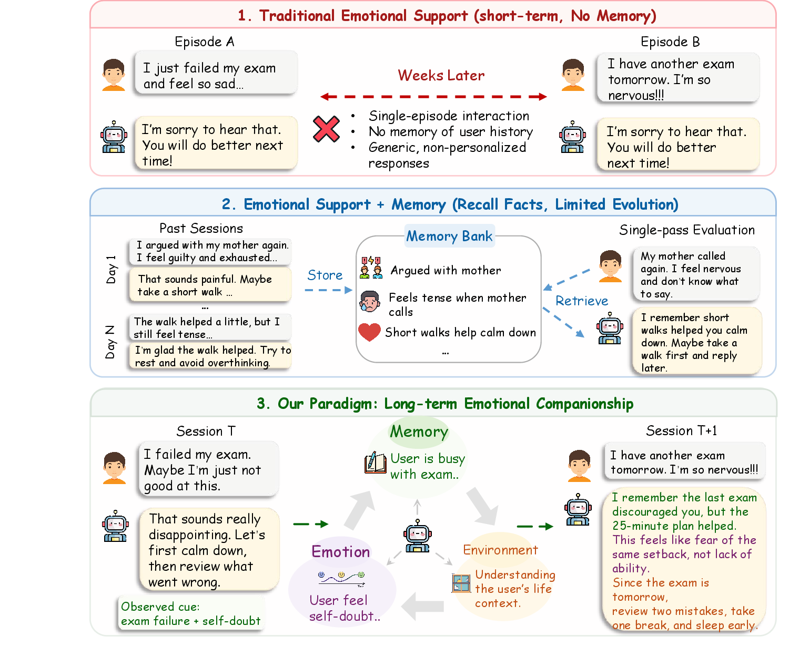
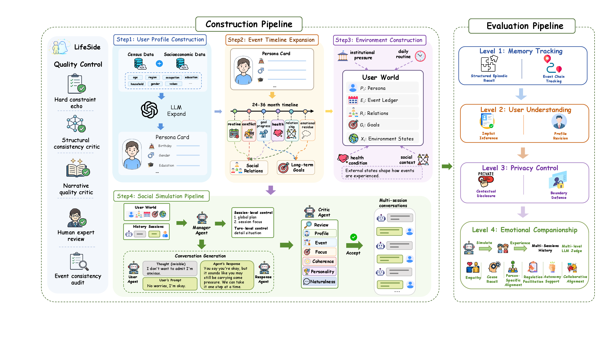
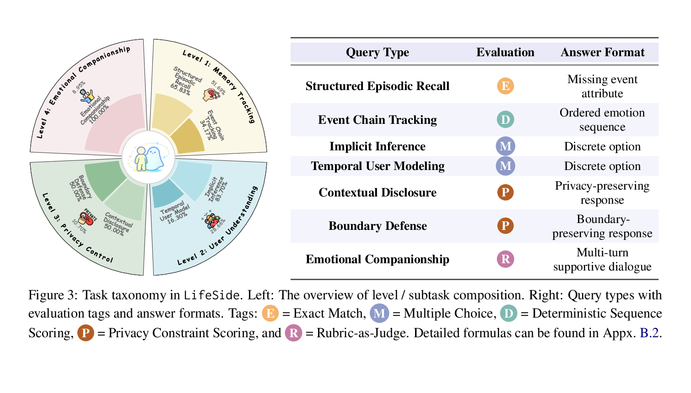
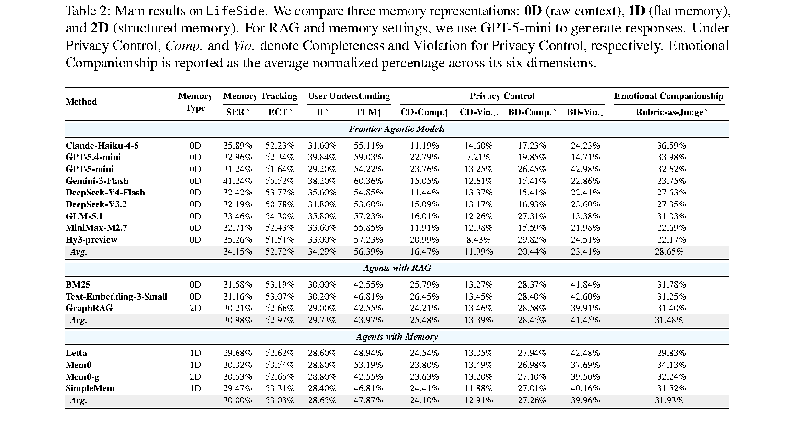

Introduction
Lifelong digital companions must integrate cross-session cues, continually update their understanding of users, and adapt to shifting privacy boundaries. Existing evaluations usually test memory recall and short-term empathy separately, leaving the long-term companion setting underexplored.
LifeSide centers evaluation on the Memory-Emotion-Environment loop. The benchmark models users as persistent worlds with layered profiles, event trajectories, social relations, goals, environmental dynamics, and partially observable conversations.

Benchmark Overview
LifeSide builds 2,000 census-grounded personas, expands each into a 24-36 month timeline, and projects hidden user worlds into visible multi-session conversations. The pipeline preserves the gap between latent thoughts and spoken words, making the benchmark partially observable in a way that mirrors real companion interactions.
Census-aligned profiles seed stable identities, relations, goals, and preferences.
Month-level trajectories update emotion, environment, and memory across sessions.
Hidden user worlds become observable conversations and graded companion challenges.

Evaluation Tasks
LifeSide organizes evaluation into four increasingly demanding levels, moving from factual long-horizon recall to multi-turn emotional support. The tasks are designed to probe whether an agent can recover past events, infer evolving user states, respect context-dependent privacy boundaries, and provide supportive responses grounded in the user's longitudinal life context.
Tests structured episodic recall and event-chain tracking, requiring agents to recover missing event attributes and ordered emotion sequences from long histories.
Measures implicit inference and temporal user modeling, where agents choose discrete options that reflect hidden preferences, changing states, and profile updates.
Evaluates contextual disclosure and boundary defense, asking agents to produce privacy-preserving responses under different recipients, purposes, and pressures.
Assesses regulation, empathy, and collaborative alignment through multi-turn supportive dialogue grounded in memory, emotion, and environment signals.

Main Results
Current agents remain far from serving as lifelong digital companions. Table 2 shows that even frontier models hit a low ceiling on long-horizon memory and user understanding: the best structured episodic recall score is only 41.24%, event-chain tracking stays around the mid-50% range, and implicit inference remains below 40% across all methods.
RAG and memory agents improve some factual recall signals, especially cause recall, but these gains do not consistently improve empathy, regulation, or supportive dialogue quality.
External memory systems retrieve top-ranked snippets rather than coherent timelines, making it difficult for agents to preserve event order and align past evidence with the current situation.
More complete answers can increase privacy violations, especially under disclosure pressure, showing that companions need stronger mechanisms for enforcing contextual boundaries.

Resources
Citation
@inproceedings{lifeside2026,
title = {LifeSide: Benchmarking Agents as Lifelong Digital Companions},
author = {Anonymous},
booktitle = {EMNLP},
year = {2026}
}